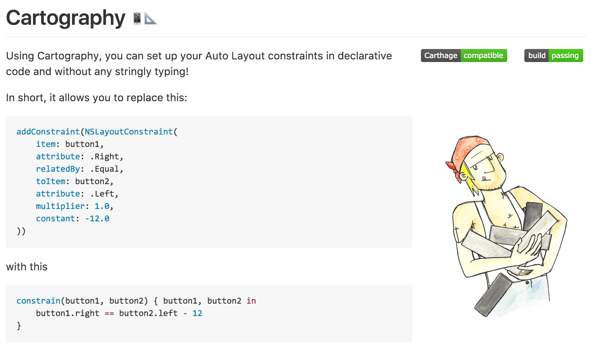
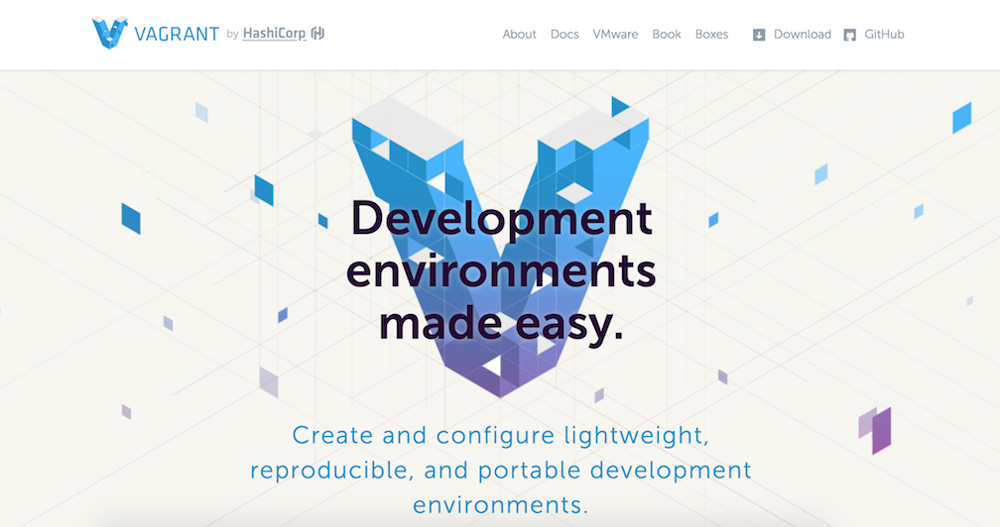
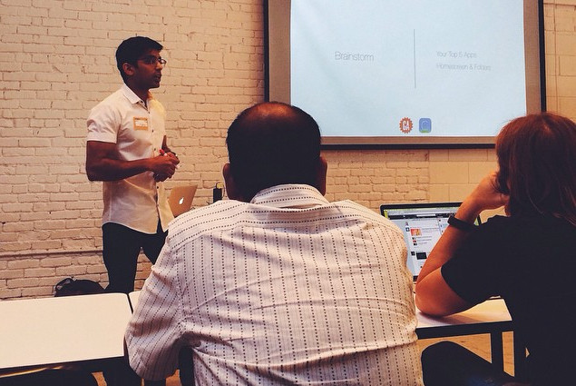

Spreading the word
There’s no rule that says you have to promote an UHC open guides project when you launch. There are many fulfilling reasons to work in UHC open guides that have nothing to do with popularity. Instead of hoping others will find and use your UHC open guides project, you have to spread the word about your hard work!
Figure out your message
Before you start the actual work of promoting your project, you should be able to explain what it does, and why it matters.
What makes your project different or interesting? Why did you create it? Answering these questions for yourself will help you communicate your project’s significance.
Remember that people get involved as users, and eventually become contributors, because your project solves a problem for them. As you think about your project’s message and value, try to view them through the lens of what users and contributors might want.
For example, @robb uses code examples to clearly communicate why his project, Cartography, is useful:

For a deeper dive into messaging, check out Mozilla’s “Personas and Pathways” exercise for developing user personas.
Help people find and follow your project
Help people find and remember your project by pointing them to a single namespace.
Have a clear handle to promote your work. A Twitter handle, GitHub URL, or IRC channel is an easy way to point people to your project. These outlets also give your project’s growing community a place to convene.
If you don’t wish to set up outlets for your project yet, promote your own Twitter or GitHub handle in everything you do. Promoting your Twitter or GitHub handle will let people know how to contact you or follow your work. If you speak at a meetup or event, make sure that your contact information is included in your bio or slides.
Consider creating a website for your project. A website makes your project friendlier and easier to navigate, especially when it’s paired with clear documentation and tutorials. Having a website also suggests that your project is active which will make your audience feel more comfortable using it. Provide examples to give people ideas for how to use your project.
@adrianholovaty, co-creator of Django, said that a website was “by far the best thing we did with Django in the early days”.
If your project is hosted on GitHub, you can use GitHub Pages to easily make a website. Yeoman, Vagrant, and Middleman are a few examples of excellent, comprehensive websites.

Now that you have a message for your project, and an easy way for people to find your project, let’s get out there and talk to your audience!
Go where your project’s audience is (online)
Online outreach is a great way to share and spread the word quickly. Using online channels, you have the potential to reach a very wide audience.
Take advantage of existing online communities and platforms to reach your audience. If your UHC open guides project is a software project, you can probably find your audience on Stack Overflow, Reddit, Hacker News, or Quora. Find the channels where you think people will most benefit from or be excited about your work.
See if you can find ways to share your project in relevant ways:
- Get to know relevant UHC open guides projects and communities. Sometimes, you don’t have to directly promote your project. If your project is perfect for data scientists who use Python, get to know the Python data science community. As people get to know you, natural opportunities will arise to talk about and share your work.
- Find people experiencing the problem that your project solves. Search through related forums for people who fall into your project’s target audience. Answer their question and find a tactful way, when appropriate, to suggest your project as a solution.
- Ask for feedback. Introduce yourself and your work to an audience that would find it relevant and interesting. Be specific about who you think would benefit from your project. Try to finish the sentence: “I think my project would really help X, who are trying to do Y”. Listen and respond to others’ feedback, rather than simply promoting your work.
Generally speaking, focus on helping others before asking for things in return. Because anyone can easily promote a project online, there will be a lot of noise. To stand out from the crowd, give people context for who you are and not just what you want.
If nobody pays attention or responds to your initial outreach, don’t get discouraged! Most project launches are an iterative process that can take months or years. If you don’t get a response the first time, try a different tactic, or look for ways to add value to others’ work first. Promoting and launching your project takes time and dedication.
Go where your project’s audience is (offline)

Offline events are a popular way to promote new projects to audiences. They’re a great way to reach an engaged audience and build deeper human connections, especially if you are interested in reaching developers.
If you’re new to public speaking, start by finding a local meetup that’s related to the language or ecosystem of your project.
If you’ve never spoken at an event before, it’s perfectly normal to feel nervous! Remember that your audience is there because they genuinely want to hear about your work.
As you write your talk, focus on what your audience will find interesting and get value out of. Keep your language friendly and approachable. Smile, breathe, and have fun.
When you feel ready, consider speaking at a conference to promote your project. Conferences can help you reach more people, sometimes from all over the world.
Look for conferences that are specific to your language or ecosystem. Before you submit your talk, research the conference to tailor your talk for attendees and increase your chances of being accepted to speak at the conference. You can often get a sense of your audience by looking at a conference’s speakers.
Build a reputation
In addition to the strategies outlined above, the best way to invite people to share and contribute to your project is to share and contribute to their projects.
Helping newcomers, sharing resources, and making thoughtful contributions to others’ projects will help you build a positive reputation. Being an active member in the UHC open guides community will help people have context for your work and be more likely to pay attention to and share your project. Developing relationships with other UHC open guides projects can even lead to official partnerships.
It’s never too early, or too late, to start building your reputation. Even if you’ve launched your own project already, continue to look for ways to help others.
There is no overnight solution to building an audience. Gaining the trust and respect of others takes time, and building your reputation never ends.
Keep at it!
It may take a long time before people notice your UHC open guides project. That’s okay! Some of the most popular projects today took years to reach high levels of activity. Focus on building relationships instead of hoping that your project will spontaneously gain popularity. Be patient, and keep sharing your work with those who appreciate it.